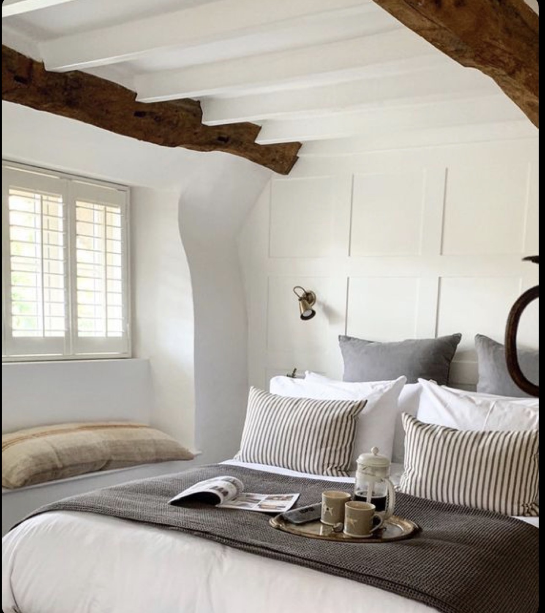
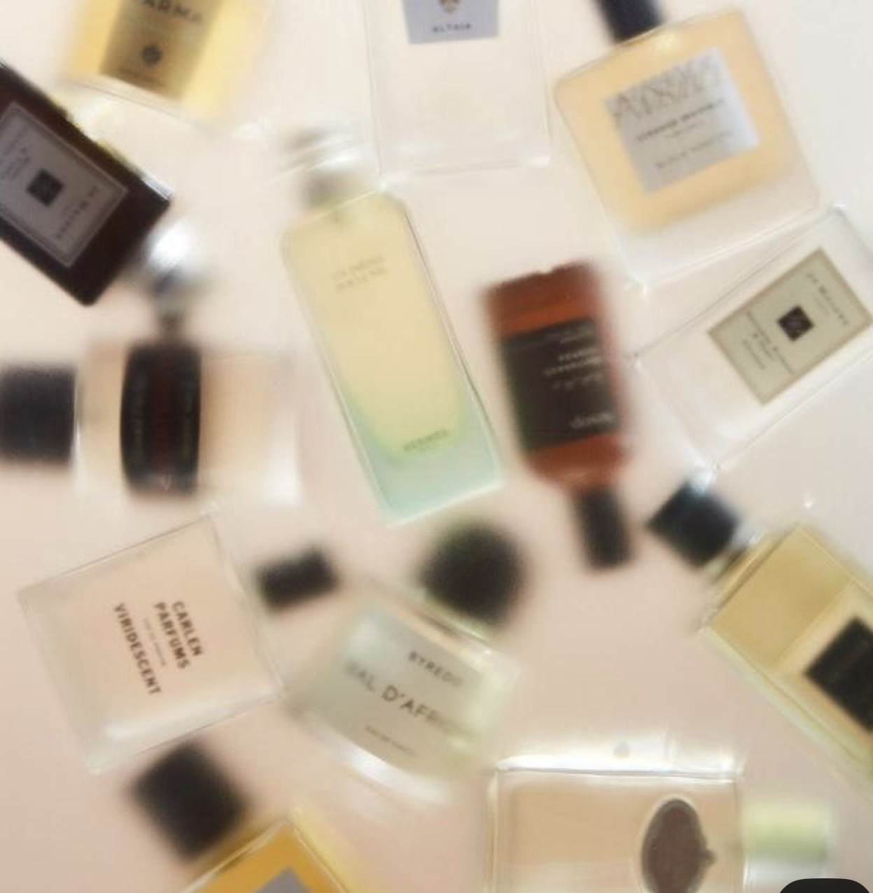
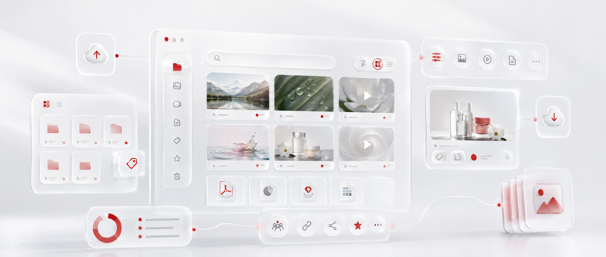

Poste Global Creative Design LeadGlobal Creative Design Lead opportunity
4 ans chez Symrise4 years at Symrise
Marque & systèmes visuelsBrand & Visual Systems
ProfilProfile
Un parcours, construit de l'intérieur.A journey, built from within.
J'évolue au sein de Symrise depuis plus de quatre ans, du support à la communication de BU jusqu'à des sujets de Communication Corporate plus larges. Cette connaissance interne — de l'organisation, de ses plateformes, de son identité visuelle et de ses besoins en communication — est ce qui fait de ce poste une suite naturelle.I have been growing within Symrise for more than four years, from BU communication support to broader Corporate Communications topics. This internal knowledge — of the organization, its platforms, its visual identity and its communication needs — is what makes this role feel like a natural next step.
2024 — Aujourd'hui2024 — PresentCDIPermanent role
Chargé de communication interneInternal Communications Officer
Communication Corporate · Segment Taste, Nutrition & HealthCorporate Communications · Taste, Nutrition & Health Segment
Depuis mon passage en CDI, mon périmètre s'est élargi vers des projets de Communication Corporate plus larges, notamment la relance du Media Center / DAM, la communication des Core Values, les sujets d'économie circulaire, ONE Symrise et le ONE SYM Hub, la gouvernance du réseau d'écrans, le calendrier corporate 2027 ainsi que des supports éditoriaux, modèles et lignes directrices. À travers ces initiatives, mon objectif reste le même : clarté, cohérence et systèmes visuels évolutifs.Since moving into a permanent role, my scope has expanded toward broader Corporate Communications projects, including the Media Center / DAM relaunch, Core Values communication, Circular Economy topics, ONE Symrise + the ONE SYM Hub, Screen Network governance, the 2027 Corporate Calendar and corporate editorial materials, templates and guidelines. Across these initiatives, my focus remains the same: clarity, consistency and scalable visual systems.
2023 — 2024
CDDFixed-term contract
Chargé de communication interne juniorJunior Internal Communications Officer
Segment Taste, Nutrition & HealthTaste, Nutrition & Health Segment
Contribution à la communication interne à travers l'affichage numérique, le design éditorial, le contenu intranet et le support visuel pour des projets de segment et corporate. Cette période a renforcé ma capacité à structurer les besoins de communication en supports utilisables, cohérents et pertinents pour l'activité.Contributed to internal communications through digital signage, editorial design, intranet content and visual support for segment and corporate projects. This period strengthened my ability to structure communication needs into usable, consistent and business-relevant materials.
2022 — 2023
AlternanceApprenticeship
Chargé de communication interne juniorJunior Internal Communications Officer
Segment Taste, Nutrition & HealthTaste, Nutrition & Health Segment
Accompagnement du déploiement de la communication et du branding TN&H sur l'ensemble des sites et points de contact. Contribution à l'ouverture du Campus de Rennes à travers des initiatives de branding local, et participation à la mise en place du réseau d'écrans de Rennes avec des modèles et lignes directrices dédiés.Supported the deployment of TN&H communication and branding across sites and touchpoints. Contributed to the opening of the Rennes Campus through local branding initiatives and helped establish the Rennes screen network with dedicated templates and guidelines.
2022
StageInternship
Assistant communicationCommunications Assistant
BU Aqua Feed
Accompagnement de la stratégie digitale de Symrise Aqua Feed, création de supports de communication imprimés pour les équipes commerciales, et contribution à la co-création et au suivi du plan média.Supported the digital strategy for Symrise Aqua Feed, created print communication materials for sales teams and contributed to the co-creation and follow-up of the media plan.
La trajectoireThe trajectory
De l'exécution à la direction créative.From execution to creative direction.
AvantBeforeExécutionExecutionCréer des supports clairs et soignés, et répondre aux besoins de communication interne des équipes.Creating clear, polished assets and supporting internal communication needs across teams.
MaintenantNowSystèmesSystemsConstruire des modèles, des plateformes et des standards visuels qui garantissent la cohérence à grande échelle.Building templates, platforms and visual standards that drive consistency at scale.
EnsuiteNextDirectionDirectionFaçonner une expression visuelle plus forte et plus cohérente pour la communication corporate à l'échelle globale.Shaping a stronger, more coherent visual expression for corporate communications globally.
Ce que j'apporteWhat I bring
Quatre atouts pour ce poste.Four strengths for this role.
Une combinaison de clarté de communication, de cohérence de marque, de réflexion plateforme et de direction créative — façonnée par une solide connaissance de Symrise vue de l'intérieur.A combination of communication clarity, brand consistency, platform thinking and creative direction — shaped by a strong understanding of Symrise from the inside.
Clarté visuelleVisual clarity
Transformer des messages internes complexes en une communication claire, structurée et percutante.Turning complex internal messages into clear, structured and impactful communication.
Cohérence de marqueBrand consistency
Construire des modèles, des standards et des systèmes visuels qui aident les équipes à communiquer d'une seule voix reconnaissable.Building templates, standards and visual systems that help teams communicate with one recognizable voice.
UX plateforme & systèmes digitauxPlatform UX & digital systems
Améliorer les points de contact internes — bibliothèques de ressources, hubs, réseaux d'écrans et espaces intranet — en mettant l'accent sur la navigation, l'accès et l'adoption.Improving internal touchpoints — asset libraries, hubs, screen networks and intranet spaces — with a focus on navigation, access and adoption.
État d'esprit direction créativeCreative direction mindset
Aller au-delà de l'exécution pour conseiller, structurer et élever la communication visuelle à plus grande échelle.Moving beyond execution to advise, structure and elevate visual communication at a broader scale.
Compétences & outilsSkills & tools
Comment je travaille.How I operate.
Design créatif et visuelCreative & Visual Design
Storytelling visuelVisual storytellingDirection créativeCreative directionSystèmes de mise en pageLayout systemsDesign éditorialEditorial designDesign de présentationPresentation designDesign digital-firstDigital-first designCohérence de marqueBrand consistency
Communication corporateCorporate Communications
Communication interneInternal communicationsHiérarchie des messagesMessage hierarchyCollaboration transverseCross-functional collaborationAccompagnement des parties prenantesStakeholder supportEngagement des collaborateursEmployee engagementPlanification de la communicationCommunication planning
Autonomie créativeCreative ownershipPrécisionPrecisionStructureStructureAutonomieAutonomyLeadership collaboratifCollaborative leadershipSouci du détailAttention to detailPensée stratégiqueStrategic thinking
Sensibilité créativeCreative sensibility
Ce qui nourrit ma créativité.What feeds my creativity.
J'ai toujours été attiré par les choses qui semblent justes avant même d'être expliquées.I have always been drawn to things that feel right before they need to be explained.
Mon inspiration ne vient pas seulement du design. Elle vient de ma façon de regarder les espaces, les senteurs, les images et les moments de recul.My inspiration does not only come from design. It comes from the way I look at spaces, scents, images and moments of distance.

01
Décoration d'intérieurInterior design
Proportion, atmosphère et le rôle du silence. Des espaces qui semblent clairs sans avoir besoin de s'expliquer.Proportion, atmosphere and the role of silence. Spaces that feel clear without needing to explain themselves.

02
ParfumeriePerfumery
Équilibre, sillage et précision. L'idée qu'une chose subtile peut malgré tout créer une forte impression.Balance, trace and precision. The idea that something subtle can still create a strong impression.
03
PhotographiePhotography
Lumière, cadrage et timing. Savoir ce qu'il faut montrer, ce qu'il faut omettre, et où le regard doit se poser.Light, framing and timing. Knowing what to show, what to leave out and where the eye should land.
04
VoyagesTravels
Changer d'environnement, ralentir et laisser de la place aux idées pour vagabonder. Souvent en Bretagne, prendre du recul m'aide à revenir avec une intention plus claire.Changing environment, slowing down and making space for ideas to wander. Often in Brittany, stepping away helps me return with clearer intent.
Projets sélectionnésSelected projects
Des projets qui rendent la communication plus claire.Projects that make communication clearer.
Six exemples concrets illustrant comment le design, la structure et la réflexion plateforme peuvent améliorer la clarté, la cohérence et l'adoption.Six selected proof points showing how design, structure and platform thinking can improve clarity, consistency and adoption.
Concept visuel et direction artistiqueVisual Concept & Art Direction
Calendrier corporate 20272027 Corporate Calendar
Création d'un concept visuel unifié pour le calendrier corporate 2027 — passage d'une imagerie fragmentée à un système narratif révélant la présence de Symrise dans les moments du quotidien.Creating a unified visual concept for the 2027 Corporate Calendar — moving from fragmented imagery toward a story-led system that reveals Symrise’s presence in everyday moments.
Concept visuelVisual conceptDirection artistiqueArt directionSystème narratifStory-led systemExpression de marqueBrand expression

DAM / Gestion des actifs numériquesDAM / Digital Asset Management
Symrise Library / Media Center
Restructuration de l'expérience DAM / Media Center de Symrise avec une logique frontend renforcée — amélioration de l'architecture de l'information, de la navigation, des conventions de nommage et de l'adoption utilisateur, pour que les ressources de marque soient plus faciles à trouver, comprendre et utiliser.Restructuring Symrise’s DAM / Media Center experience with a stronger frontend logic — improving information architecture, navigation, naming conventions and user adoption to make brand assets easier to find, understand and use.
Architecture de l'informationInformation architectureUX & UIStructure de contenuContent structureAdoption des ressourcesAsset adoption
Communication développement durableSustainability Communication
Économie circulaireCircular Economy
Accompagnement de la communication autour des sujets d'économie circulaire en transformant des messages de développement durable complexes en récits visuels plus clairs, aidant les publics internes à comprendre la logique, l'ambition et l'impact de l'initiative.Supporting communication around circular economy topics by turning complex sustainability messages into clearer visual narratives, helping internal audiences understand the logic, ambition and impact behind the initiative.
Développement durableSustainabilityClarté du messageMessage clarityStorytelling visuelVisual storytellingCommunication interneInternal communication
Affichage numérique et gouvernanceDigital Signage & Governance
Gouvernance du réseau d'écransScreen Network Governance
Création et développement d'un réseau d'écrans internes sur plusieurs sites français — élaboration de modèles, de standards éditoriaux et de processus, tout en formant les équipes locales à publier du contenu de façon plus autonome et cohérente.Creating and expanding an internal screen network across several French sites — developing templates, editorial standards and workflows, while training local teams to publish content more autonomously and consistently.
Déploiement du réseauNetwork rolloutFormationTrainingAffichage numériqueDigital signageGouvernanceGovernanceModèles et lignes directricesTemplates & guidelines
Lettre de motivationMotivation letter
Global Creative Design Lead.
Pierre-Marie Meston Chevalier
Communication Corporate · SymriseCorporate Communications · Symrise
Rennes, mai 2026Rennes, May 2026
Sincèrement,With sincerity,
Pierre-Marie Meston Chevalier
Communication Corporate · SymriseCorporate Communications · Symrise
PM
Me contacterGet in touch
Parlons de Design Créatif.Let's talk about Creative Design.
Ouvert à échanger sur le poste de Global Creative Design Lead et sur la façon dont la communication visuelle peut renforcer la cohérence de l'expérience Symrise.Open to discussing the Global Creative Design Lead opportunity and how visual communication can support a more consistent Symrise experience.
pierre-marie.meston@symrise.com
E-mail professionnelProfessional email
linkedin.com/in/pm-meston
LinkedIn
Basé en FranceFrance-based
Ouvert à la collaboration à l'internationalOpen to global collaboration